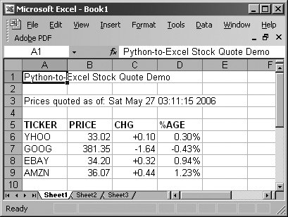

23.4. Exercises
Web Services
| 23-1. | Web Services. Take the Yahoo! stock quote example (stock.py) and change the application to save the quote data to a file instead of displaying it to the screen. Optional: You may change the script so that users can choose to display the quote data or save it to a file.
| | 23-2. | Web Services. Update the Yahoo! stock quote example (stock.py) to download other stock quote data given the additional parameters listed above. Optional: You may add this feature to your solution to the above exercise.
| | 23-3. | Web Services and the csv Module. Convert stock.py to using the csv module to parse the incoming data, like we did in the example code snippet. Extra Credit: Do the same thing to the Excel version of this script (estock.py).
| | 23-4. | REST and Web Services. Study how REST and XML are used in more modern-day Web services APIs and applications. Describe the additional functionality you get over older systems like the Yahoo! quote server, which uses URL parameters.
| | 23-5. | REST and Web Services. Build an application framework using Python's support for REST and XML that will allow you to share and reuse this code when writing applications that use any of the newer Web services and APIs available today. Display your code using APIs from Yahoo!, Google, eBay, and/or Amazon.
|
Microsoft Office Programming
| 23-6. | Microsoft Excel and Web Pages. Create an application that will read data from an Excel spreadsheet and map all of it to an equivalent HTML table. (You may use the third-party HTMLgen module if desired.)
| | 23-7. | Microsoft Office Applications and Web Services. Interface to any existing Web service, whether REST- or URL-based, and write data to an Excel spreadsheet or format the data nicely into a Word document. Format them properly for printing. Extra Credit: Support both Excel and Word.
| | 23-8. | Microsoft Outlook and Web Services. Similar to the previous problem, do the same thing, but put the data into a new e-mail message that you send with Outlook. Extra Credit: Do the same thing but send the e-mail with regular SMTP instead. (You may wish to refer to Chapter 17 on Internet Client Programming.)
| | 23-9. | Microsoft PowerPoint. Design a presentation slide creator. Design the specification of a text file that users will create with Word or a normal text editor. Using the specification format, read in the presentation data and create the appropriate PowerPoint slides all as part of a single presentation.
| | 23-10. | Microsoft Outlook, Databases, and Your Address Book.Write a program that will extract the contents of an Outlook address book and store the desired fields into a database. The database can be a text file, DBM file, or even an RDBMS. (You may wish to refer to Chapter 21, Database Programming.) Extra Credit: Do the reverse ... read in contact information from a database (or allow for direct user input) and create or update records in Outlook.
| | 23-11. | Microsoft Outlook and E-mail. Develop a program that backs up your e-mail by taking the contents of your Inbox and/or other important folders and saves them in (as close to) regular "box" format to disk.
| | 23-12. | Microsoft Outlook Calendar. Write a simple script that creates new Outlook appointments. Take at least the following as user input: start date and time, appointment name or subject, and duration of appointment.
| | 23-13. | Microsoft Outlook Calendar. Build an application that dumps the contents of your appointments to a destination of your choice, i.e., to the screen, to a database, to Excel, etc. Extra Credit: Do the same thing to your set of Outlook tasks.
| | | | 23-14. | Multithreading. Update the Excel version of the stock quote download script (estock.pyw) so that the downloads of data happen "concurrently" using multiple Python threads. Optional: You may also try this exercise with Visual C++ threads using win32process.beginthreadex().
| | 23-15. | Excel Cell Formatting. In the spreadsheet version of the stock quote download script (estock.pyw), we saw in Figure 23-7 how the stock price does not default to two places after the decimal point even if we pass in a string with the trailing zero(s). When Excel converts it to a number, it uses the default setting for the number format.
Change the numeric format to correctly go out to two decimal places by changing the cell's NumberFormat attribute to "0.00." We can also saw that the "change from previous close" column loses the "+" in addition to the decimal point formatting. However, we discover that making the correction in part (a) to both columns only solves the decimal place problem... the plus sign is automatically dropped for any number. The solution here is to change this column to be text instead of a number. You can do this by changing the cell's NumberFormat attribute to "@." By changing the cell's numeric format to text, however, we lose the right alignment that comes automatically with numbers. In addition to your solution to part (b), you must also now set the cell's HorizontalAlignment attribute to the Win32 Excel constant xlRight. After you come up with the solutions to all three parts, your output will now look more acceptable, as shown in Figure 23-9.

|
Java, Python, Jython
| 23-16. | Jython. What is the difference between Jython and CPython?
| | 23-17. | Java and Python. Take an existing Java application and port it to Python. Write down your experience in a journal. When complete, give an executive summary of what has to be accomplished, what some of the important steps are, and what common operations you have to perform to make it happen.
| | | | 23-18. | Java and Python. Study the Jython source code. Describe how some of Python standard types are implemented in Java.
| | 23-19. | Java and Python. Extend Python by writing an extension in Java. What are the necessary steps? Demonstrate your working solution by showing how it works in with the Jython interactive interpreter.
| | 23-20. | Jython and Databases. Find an interesting exercise from the Chapter 21 and port it to Jython. One of the best things about Jython is that starting in 2.1, it now comes with a JDBC database module called zxJDBC that is nearly Python DB-API 2.0-compliant.
| | 23-21. | Python and Jython. Find a Python module not available in Jython (yet) and port it. Consider submitting it as a patch to the Jython distribution.
|
|